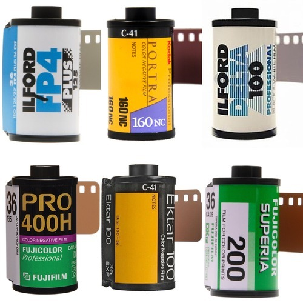

35mm is basically the smallest format available for film photography. Technically smaller film formats still exist and have previously existed (such as 110 film) but most are either discontinued or very rarely used; so for the purposes of this discussion we are calling it the smallest. Oskar Barnack invented the world’s first 35mm camera - Ur-Leica – in the 1920s, but it wasn’t until the 1960s that the format surpassed the 120 or medium film format in popularity. This was largely in part to Kodak, who made 35mm more accessible with a wide array of user-friendly cameras. Fun fact: 35mm was once also called miniature or small format, in comparison to medium and large formats.

Fujifilm is On the Way Out
While Fujifilm is making huge progress on the digital side of photography and imposing its Instax line as the standard for instant films, they’ve been letting analog photography fall to the side of the road. Their catalog is getting smaller and smaller, and I don’t see them jumping back on the train anytime soon.Fuji Pro 400H is probably the only Fuji film that I could shoot with, but I’m not a big fan of its colors. Clearly, the Kodak brand is doing a better job here.
Lomography is in the Game
Lomography has played a major role in the resurgence of film, so it’s no surprise to see two of their films in the top 10. Over the past several years, they’ve been bringing new fun cameras and cool-looking film to the market. You may or may not like their products, but we all do have to say a big “thank you” for what they’ve done to keep film alive.
Kodak Rules
With 3 films in the 3 first places, Kodak clearly leads the market and I’m guessing that’s not a surprise to anyone. The market has been driven by this company since longer than most of us can recall. Even if other manufacturers have been trying to compete against them, they still seem to be one step ahead.